승강기기사 (2020-06-06 기출문제)
1과목: 승강기 개론
1. 엘리베이터의 신호장치 중 홀 랜턴(hall lantem)이란?
- 엘리베이터가 고장중임을 나타내는 표시등
- 엘리베이터가 정상운행중임을 나타내는 표시등
- 엘리베이터의 현재 위치의 층을 나타내는 표시등
- 엘리베이터의 올라감과 내려감을 나타내는 방향등
(정답률: 77%)

2. 엘리베이터용 주행안내(가이드) 레일을 선정할 때 고려해야 할 요소로 관계가 가장 적은 것은?
- 관성력
- 좌굴하중
- 수평진동력
- 회전모멘트
(정답률: 69%)
3. 전기식 엘리베이터의 트랙션 능력에 대한 설명으로 틀린 것은?
- 가속도가 클수록 미끄러지기 쉽다.
- 와이어로프의 권부각이 클수록 미끄러지기 쉽다.
- 와이어로프와 도르래의 마찰계수가 작을수록 미끄러지기 쉽다.
- 카측과 균형추측의 장력비가 트랙션 능력에 근접할수록 미끄러지기 쉽다.
(정답률: 74%)
4. 주차법령에 따른 기계식주차장치 안에서 자동차를 입ㆍ출고 하는 사람이 출입하는 통로의 크기로 맞는 것은?
- 너비:30cm 이상, 높이:1.6m 이상
- 너비:50cm 이상, 높이:1.8m 이상
- 너비:60cm 이상, 높이:2m 이상
- 너비:80cm 이상, 높이:2m 이상
(정답률: 76%)
5. 사람이 출입할 수 없도록 정격하중이 300kg이하이고, 정격속도가 1m/s 이하인 엘리베이터는?
- 화물용 엘리베이터
- 자동차용 엘리베이터
- 주택용(소형) 엘리베이터
- 소형화물용 엘리베이터(덤웨이터)
(정답률: 85%)
6. 에스컬레이터에서 난간의 끝부분으로 콤교차선부터 손잡이 곡선 반환부까지의 난간구역을 무엇이라고 하는가?
- 뉴얼
- 스커트
- 하부 내측데크
- 스커트 디플렉터
(정답률: 70%)
7. 과속조절기(조속기)에 대한 설명으로 틀린 것은?
- 과속검출 스위치는 카가 미리 정해진 속도를 초과하여 하강하는 경우에만 작동된다.
- 과속조절기(조속기)에는 추락방지안전장치(비상정지장치)의 작동과 일치하는 회전방향이 표시되어야 한다.
- 캠티브 롤러 형을 제외한 즉시 작동형 추락방지안전장치(비상정지장치)의 경우 0.8m/s미만의 속도에서 작동해야 한다.
- 추락방지안전장치(비상정지장치)의 작동을 위한 과속조절기(조속기)
(정답률: 51%)
8. 엘리베이터의 조작방식 중 다름과 같은 방식은?
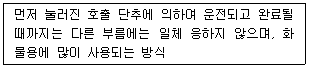
- 단식자동식
- 승합전자동식
- 군승합자동식
- 하강승합자동식
(정답률: 80%)
9. 과속조절기(조속기) 도르래의 회전을 베벨기어에 의해 수직축의 회전으로 변환하고, 이축의 상부에서부터 링크 기구에 의해 매달린 구형의 진자에 작용하는 원심력으로 추락방지 안전장치(비상정지장치)를 작동시키는 과속조절기는?
- 디스크형
- 스프링형
- 플라이 볼형
- 롤 세이프티형
(정답률: 74%)
10. 주행안내(가이드) 레일 중 규격으로 틀린 것은?
- 8K
- 15K
- 24K
- 30K
(정답률: 76%)
11. 엘리베이터에는 카의 안전한 운행을 좌우하는 구동기 또는 제어시스템의 어떤 하나의 결함으로 인해 승강장문이 잠기지 않고 카문이 닫히지 않은 상태로 카가 승강장으로부터 벗어나는 개문출발을 방지하거나 카를 정지시킬 수 있는 장치는?
- 상승과속방지장치
- 개문출발방지장치
- 과속조절기(조속기)
- 추락방지안전장치(비상정지장치)
(정답률: 83%)
12. 에스컬레이터 안전기준에 따라 공칭속도가 0.5m/s, 디딤판(스텝) 폭이 0.6m인 에스컬레이터에 대한 시간당 수송능력은?
- 3000명/h
- 3600명/h
- 4400명/h
- 4800명/h
(정답률: 66%)
13. 승강기 안전관리법에 따른 용도별 승강기의 세부종류 중 사람의 운송과 화물 운반을 겸용하기에 적합하게 제조ㆍ설치된 엘리베이터는?
- 화물용 엘리베이터
- 승객용 엘리베이터
- 자동차용 엘리베이터
- 승객화물용 엘리베이터
(정답률: 82%)
14. 종단층 강제감속장치에 대한 설명으로 틀린 것은?
- 2단 이하의 감속제어가 되어야 한다.
- 1G(9.8m/s2)를 초과하지 않는 감속도를 제공하여야 한다.
- 카 추락방지안전장치(비상정지장치)를 작동시키지 않아야 한다.
- 종단층 강제감속장치는 카 상단, 승강로 내부 또는 기계실 내부에 위치하여야 한다.
(정답률: 49%)
15. 유압식 엘리베이터의 파워유니트에서 유압잭에 이르는 압력배관의 도중에 설치한 수동밸브로 보수ㆍ점검 및 수리의 용도로 사용하는 것은?
- 사이런서
- 스톱밸브
- 스트레이너
- 상승용 유량제어밸브
(정답률: 81%)
16. 승강장문, 카문의 접점과 문 잠금장치의 유지관리를 위해 제어반 또는 비상운전 및 작동시험을 위한 장치에는 어떤 장치가 제공되어야 하는가?
- 음향신호장치
- 종단정지장치
- 바이패스장치
- 비상전원공급장치
(정답률: 59%)
17. 엘리베이터 기계실에 설치하면 안 되는 것은?
- 권상기
- 제어반
- 과속조절기(조속기)
- 추락방지안전장치(비상정지장치)
(정답률: 75%)
18. 시브(Sheave)의 홈 형상 중 언더 컷 형상을 사용하는 주된 이유는?
- U홈보다 시브의 마모가 적기 때문에
- U홈보다 로프의 수명이 늘어나기 때문에
- U홈과 V홈의 장점을 가지며 트렉셔 능력이 크기 때문에
- U홈보다 마찰계수가 작아 접촉면의 면압을 낮추기 때문에
(정답률: 66%)
19. 에너지 분산형 완충기는 카에 정격하중을 싣고 정격속도의 115%의 속도로 자유낙하하여 완충기에 충돌할 때, 평균감속도(gn)는 얼마 이하여야 하는가?
- 0.1
- 0.5
- 1
- 2
(정답률: 78%)
20. 엘리베이터에 사용되는 헬리컬기어의 특징으로 틀린 것은?
- 웜기어보다 효율이 높다.
- 웜기어보다 역구동이 쉽다.
- 웜기어에 비하여 소음이 작다
- 일반적으로 웜기어보다 고속 기종에 사용된다.
(정답률: 69%)
2과목: 승강기 설계
21. 정지 레오나드 제어방식과 관련이 없는 것은?
- 전동발진기
- 사이리스터
- 직류리액터
- 속도발전기
(정답률: 42%)
22. 지름이 10cm인 연강봉에 10kgf의 인장력이 작용할 때 생기는 인장응력은 약 몇 kgf/cm2인가?(오류 신고가 접수된 문제입니다. 반드시 정답과 해설을 확인하시기 바랍니다.)
- 127.33
- 137.32
- 147.32
- 157.32
(정답률: 48%)
23. 과속조절기(조속기) 로프 인장 풀리의 피치직경과 과속조절기 로프의 공칭 지름의 비는 얼마이상이어야 하는가?
- 20
- 30
- 36
- 40
(정답률: 63%)
24. 권상기 기계대(machine beam)가 콘크리트로 되어있을 때 안전율은 얼마가 가장 적합한가?
- 7
- 9
- 12
- 15
(정답률: 63%)
25. 로프의 안전계수가 12, 허용응력이 500kgf/cm2인 엘리베이터에서 로프의 인장강도는 몇 kgf/cm2인가?
- 3000
- 4000
- 5000
- 6000
(정답률: 73%)
26. 두 개의 기어가 맞물렸을 때 두 톱니 사이의 틈을 무엇이라 하는가?
- 피치
- 백래시
- 어덴덤
- 이끌의 틈
(정답률: 68%)
27. 다음 중 전동기의 내열등급이 가장 높은 기호는?
- A
- B
- E
- H
(정답률: 61%)
28. 카 자중 1000kg, 정격 적재하중 800kg, 오버밸런스율이 50%인 균형추의 무게는 몇 kg인가?
- 1300
- 1400
- 1500
- 1600
(정답률: 63%)
29. 미끄럼 베어링에 비교한 구름 베어링의 특징이 아닌 것은?
- 진동소음이 비교적 많다.
- 비교적 내충격성이 약하다.
- 축경에 대한 바깥지름이 크고 폭이 좁다.
- 윤활이 어렵고 누설방지를 위한 노력이 필요하다.
(정답률: 53%)
30. 엘리베이터의 일주시간(RTT)을 계산하는 식은?
- ∑(주행시간+도어개폐시간+승객출입시간+손실 시간)
- ∑(주행시간+도어개폐시간+승객출입시간+대기 시간)
- ∑(주행시간+수리시간+승객출입시간+출발시간)
- ∑(주행시간+대기시간+도어개폐시간+출발시간)
(정답률: 74%)
31. 카문의 문턱과 승강장문의 문턱 사이의 수평거리는 몇 mm 이하이어야 하는가?
- 10
- 20
- 25
- 35
(정답률: 72%)
32. 카바닥과 카틀의 부재와 이에 작용하는 하중의 연결이 틀린 것은?
- 볼트-장력
- 카바닥-장력
- 추돌판-굽힘력
- 카주-굽힘력, 장력
(정답률: 64%)
33. 전기식 엘리베이터 카측 주행안내(가이드)레일에 작용하는 하중이 1000kgf이고, 브라켓 간격이 200cm, 영률이 210×104kgf/cm2, 레일 단면 2차 모멘트가 180cm4일 때, 주행안내 레일의 휨량은 약 몇 cm인가?(오류 신고가 접수된 문제입니다. 반드시 정답과 해설을 확인하시기 바랍니다.)
- 1.22
- 0.12
- 0.18
- 0.24
(정답률: 21%)
34. 엘리베이터의 방범설비가 아닌 것은?
- 방법창
- 완충기
- 경보장치
- 연락장치
(정답률: 76%)
35. 다음 중 엘리베이터에 적용되는 레일의 치수를 결정하는데 고려할 요소로 가장 적절하지 않은 것은?
- 레일용 브라켓의 중량
- 지진이 발생할 때 건물의 수평진동
- 카에 하중이 적재될 때 카에 걸리는 회전모멘트
- 추락방지안전장치(비상정지장치)가 작동될 때 레일에 걸리는 좌굴하중
(정답률: 70%)
36. 주행안내(가이드) 레일에 대한 설명으로 틀린 것은?
- 주행안내 레일이 느슨해질 수 있는 부속품의 풀림은 방지되어야 한다.
- 주행안내 레일은 압연강으로 만들어지거나 마찰 면이 기계 가공되어야 한다.
- 카, 균형추 또는 평형추는 2개 이상의 견고한 금속제 주행안내 레일에 의해 각각 안내되어야 한다.
- 추락장치안전장치(비상정지장치)가 없는 균형추의 주행안내 레일은 부식을 고려하지 않고 금속판을 성형하여 만들 수 있다.
(정답률: 71%)
37. 경사각이 30°, 속도가 3.0m/min, 디딤판(스텝) 폭이 0.8m이며, 층고가 9m인 에스컬레이터의 적재하중은 약 몇 kg인가?
- 1080
- 1870
- 2749
- 3367
(정답률: 36%)
38. 엘리베이터에서 카틀의 구성요소가 아닌 것은?
- 카주
- 상부체대
- 스프링 버퍼
- 브레이스 로드
(정답률: 70%)
39. 과속조절기(조속기)의 종류가 아닌 것은?
- 디스크형
- 마찰정지형
- 플라이 볼형
- 세이프티 디바이스형
(정답률: 62%)
40. 다음 중 재해 시 관제운전의 우선순위가 가장 높은 것은?
- 화재 시 관제
- 지진 시 관제
- 정전 시 관제
- 태풍 시 관제
(정답률: 66%)
3과목: 일반기계공학
41. 이론 토출량이 22×103cm3/min인 펌프에서 실체 토출량이 20×103cm3/min로 나타날 때 펌프의 체적효율은 약 몇 %인가?
- 91
- 84
- 79
- 72
(정답률: 45%)
42. 나사에 대한 설명으로 틀린 것은?
- 미터나사의 피치는 mm단위이다.
- 체결용 나사에는 주로 삼각나사가 사용된다.
- 운동용 나사는 사각나사, 사다리꼴 나사 등이 사용된다.
- 사다리꼴 나사에서 미터계는 29°, 인치계는 30°의 나사산 각을 갖는다.
(정답률: 61%)
43. 압축 코일스프링에서 흡수되는 에너지를 크게 하기 위한 방법으로 틀린 것은?
- 스프링 권수를 늘린다.
- 소선의 지름을 크게 한다.
- 스프링 지수를 크게 한다.
- 전단탄성계수가 작은 소재를 사용한다.
(정답률: 45%)
44. 주조품 제조 시 주물의 형상이 대형으로 구조가 간단하고 점토로 채워서 만들며 정밀한 주형 제작이 곤란한 원형은?
- 잔형
- 회전형
- 골격형
- 매치 플레이트형
(정답률: 64%)
45. 그림과 같이 직경 10cm의 원형 단면을 갖는 외팔보에서 굽힘마중 P1만 작용할 때의 굽힘응력은 인장하중 P2만 작용할 때의 응력의 약 몇 배가 되는가? (단, P1=P2=10kN이다.)
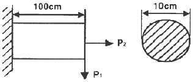
- 54
- 64
- 74
- 80
(정답률: 27%)
46. 다음 금속재료 중 시효경화 현상이 발생하는 합금은?
- 슈퍼 인바
- 니켈-크롬
- 알루미늄-구리
- 니켈-청동
(정답률: 53%)
47. 다음 중 체결용 기계요소가 아닌 것은?
- 리벳
- 래칫
- 키
- 핀
(정답률: 63%)
48. 밀링작업에서 분할대를 사용한 분할법이 아닌 것은?
- 단식 분할
- 복식 분할
- 직접 분할
- 차동 분할
(정답률: 40%)
49. 원형 파이프 유동에서 난류로 판단할 수 있는 기준 레이놀즈 수(Re)는?
- Re＞600
- Re＞2100
- Re＞3000
- Re＞4000
(정답률: 43%)
50. 금속재료를 고온에서 장시간 외력을 가하면 시간의 흐름에 따라 변형이 증가하게 되는데 이러한 현상은?
- 열응력
- 피로한도
- 탄성에너지
- 크리프
(정답률: 62%)
51. 다음 설명에 해당하는 재료는?
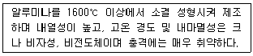
- 세라믹
- 다이아몬드
- 유리섬유강화수지
- 탄소섬유강화수지
(정답률: 68%)
52. 웜 기어(worm gear)의 장점으로 틀린 것은?
- 소음과 진동이 적다.
- 역전을 방지할 수 있다.
- 큰 감속비를 얻을 수 있다.
- 추력하중이 발생하지 않고 효율이 좋다.
(정답률: 55%)
53. 평평한 금속판재를 펀치로 다이 공동부에 밀어 넣어 원통형이나 각통형 제품을 만드는 가공은?
- 엠보싱
- 벌징
- 드로잉
- 트리밍
(정답률: 41%)
54. 국제단위계(SI)의 기본 단위가 아닌 것은?
- 시간-초(s)
- 온도-섭씨(℃)
- 전류-암페어(A)
- 광도-칸델라(cd)
(정답률: 67%)
55. 다음 보기에는 설명하는 축 이음으로 가장 적합한 것은?
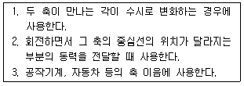
- 유니버설 조인트
- 슬리브 커플링
- 올덤 커플링
- 플렉시블 조인트
(정답률: 57%)
56. 내경과 외경이 거의 같은 중공 원형단면의 축을 얇은 벽의 관이라 한다. 이 때 비틀림 모멘트를 T, 평균 중심선의 반지름 r, 벽의 두께 t, 관의 길이를 ℓ이라 할 때, 비틀림 각을 표현한 식이 아닌 것은? (단, 평균 중심선에 둘러쌓인 면적(A)=πr2, 평균 중심선의 길이(S)2πr, 극관성모멘트=Ip, 전단탄성계수=G, 전단응력=τ이다.)
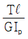
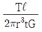
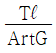
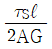
(정답률: 45%)
57. 피복아크용접에서 직류 정극성을 이용하여 용접하였을 때 특징으로 옳은 것은?
- 비드 폭이 좁다.
- 모재의 용입이 얕다.
- 용접본의 녹음이 빠르다.
- 박판, 주철, 비철금속의 용접에 주로 쓰인다.
(정답률: 40%)
58. 액추에이터의 유입압력이 50kgf/cm2, 액추에이터의 유출압력(유압펌프로 흡입되는 압력)이 5kgf/cm2이고, 유량은 15cm3/s, 효율이 0.9일 때 펌프의 소요동력은 약 몇 kW인가?
- 0.074
- 0.1
- 0.15
- 0.2
(정답률: 33%)
59. 원형재료의 외경에 수나사를 가공하는 공구는?
- 탭
- 다이스
- 리머
- 바이스
(정답률: 46%)
60. 일반적으로 재료의 안전율을 구하는 식은?
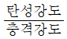
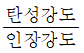
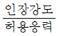
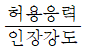
(정답률: 67%)
4과목: 전기제어공학
61. 피드백 제어의 특징에 대한 설명으로 틀린 것은?
- 외란에 대한 영향을 줄일 수 있다.
- 목표값과 출력을 비교한다.
- 조절부와 조작부로 구성된 제어요소를 가지고 있다.
- 입력과 출력의 비를 나타내는 전체 이득이 증가한다.
(정답률: 53%)
62. 목표값 이외의 외부 입력으로 제어량을 변화시키며 인위적으로 제어할 수 없는 요소는?
- 제어동작신호
- 조작량
- 외란
- 오차
(정답률: 55%)
63. 입력신호가 모두 “1”일 때만 출력이 생성되는 논리회로는?
- AND 회로
- OR 회로
- NOR 회로
- NOT 회로
(정답률: 61%)
64. 변압기의 효율이 가장 좋을 때의 조건은?
- 철손=2/3×동손
- 철손=2×동손
- 철손=1/2×동손
- 철손=동손
(정답률: 57%)
65. 역률 0.85, 선전류 50A. 유효전력 28kW인 평형 3상 △부하의 전압(V)은 약 얼마인가?
- 300
- 380
- 476
- 660
(정답률: 50%)
66. 물체의 위치, 방향 및 자세 등의 기계적변위를 제어량으로 해서 목표값의 임의의 변화에 추종하도록 구성된 제어계는?
- 프로그램제어
- 프로세스제어
- 서보 기구
- 자동 조정
(정답률: 56%)
67. 다음 중 간략화한 논리식이 다른 것은?
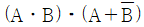
- Aㆍ(A+B)
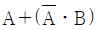
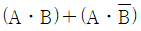
(정답률: 41%)
68. 논리식
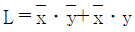
를 간단히 한 식은?- L=x
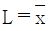
- L=y
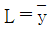
(정답률: 56%)
69. R=10Ω, L=10mH에 가변콘덴서 C를 직렬로 구성시킨 회로에 교류주파수 1000Hz를 가하여 직렬공진을 시켰다면 가변콘덴서는 약 몇 μF인가?
- 2.533
- 12.675
- 25.35
- 126.75
(정답률: 26%)
70. 스위치 S의 개폐에 관게없이 전류 I가 항상 30A라면, R3와 R4는 각각 몇 Ω인가?
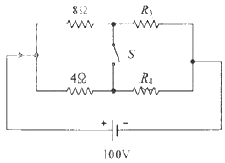
- R3=1, R4=3
- R3=2, R4=1
- R3=3, R4=2
- R3=4, R4=4
(정답률: 58%)
71. 맥동률이 가장 큰 정류회로는?
- 3상 전파
- 3상 반파
- 단상 전파
- 단상 반파
(정답률: 44%)
72. 다음 신호흐름선도에서
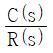
는?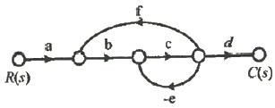
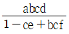
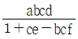
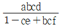
(정답률: 49%)
73. 다음 회로와 같이 외전압계법을 통해 측정한 전력(W)은? (단, Ri:전류계의 내부저항, Re:전압계의 내부저항이다.)
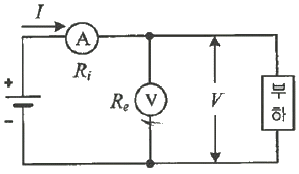
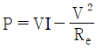
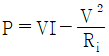
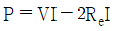
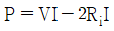
(정답률: 37%)
74. 다음 블록선도의 전달함수는?
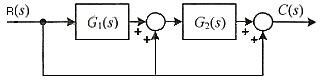
- G1(s)G2(s)+G2(s)+1
- G1(s)G2(s)+1
- G1(s)G2(s)+G2
- G1(s)G2(s)+G1+1
(정답률: 42%)
75. 코일에서 흐르고 있는 전류가 5배로 되면 축척되는 에너지는 몇 배가 되는가?
- 10
- 15
- 20
- 25
(정답률: 59%)
76. 탄성식 압력계에 해당되는 것은?
- 경사관식
- 압전기식
- 환상평형식
- 벨로스식
(정답률: 54%)
77. 2전력계법으로 3상 전력을 측정할 때 전력계의 지시가 W1=200, W, W2=200W이다. 부하전력(W)은?
- 200
- 400
- 200√3
- 400√3
(정답률: 37%)
78. 단자전압 Vab는 몇 V인가?
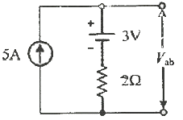
- 3
- 7
- 10
- 13
(정답률: 38%)
79. 아래 R-L-C 직렬회로의 합성 임피던스(Ω)는?
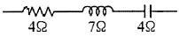
- 1
- 5
- 7
- 15
(정답률: 41%)
80. 전자석의 흡인력은 자속밀도 B(Wb/m2)와 어떤 관계에 있는가?
- B에 비례
- B1.5에 비례
- B2에 비례
- B3에 비례
(정답률: 44%)